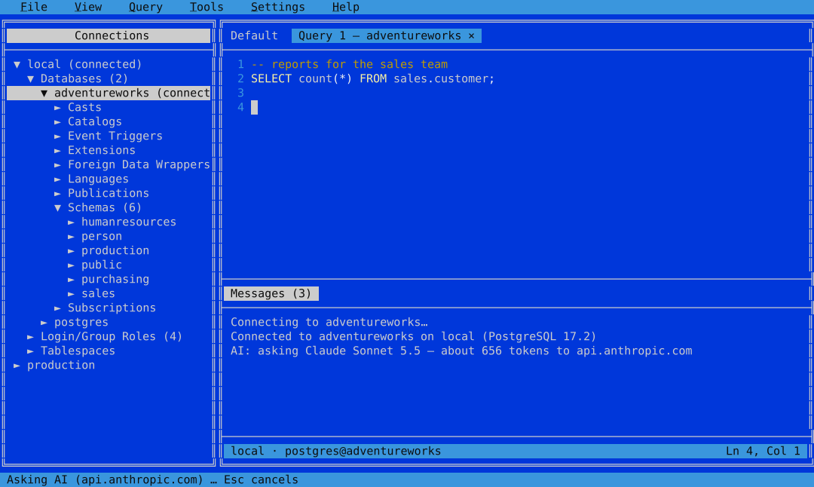
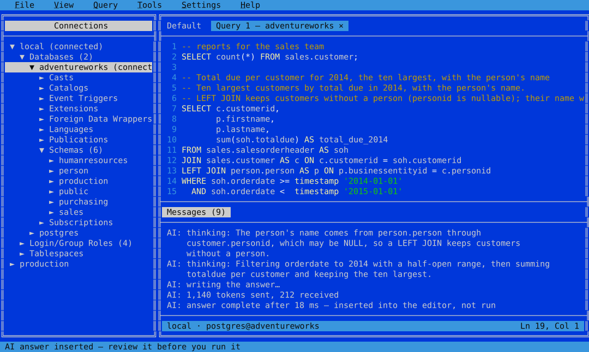

AI assistant
Describe in your own words what you need — a report query, a procedure, a change to the statement you are writing — and an AI model writes the SQL. It knows the structure of your database and sees the text in your editor. The answer always goes into the SQL editor and is never run: you read it, change it if needed, and run it yourself with F5.

Setting it up
The assistant is off until you set it up. Open :

| Field | Meaning |
|---|---|
| Enabled | The assistant works only when this is on. Off: F8 says AI is not set up. |
| Preset | Fills in protocol, base URL and model for a known provider (table below). Every field stays editable; (custom) leaves them as they are. |
| Protocol | The request format: OpenAI-compatible (POST {base URL}/chat/completions) or Anthropic (POST {base URL}/v1/messages). |
| Base URL | Where the requests go. Required when the assistant is enabled. |
| Model | The model name the provider expects. Required. Providers bring out new models often — use any name your account offers. |
| API key | The key from your provider's console. Type it, or paste it with your terminal's paste (e.g. a right click, or Ctrl+Shift+V), and press OK. A saved key shows as ********:
|
The key is saved in its own file, ai_key, in pgtc's config folder next to settings.toml
(Reference → Files and folders) — on Linux and macOS readable only by you, like
.pgpass. It is not in settings.toml, so you can copy or show that file without giving
your key away, and it is never written to the log. The other fields are in the [ai] section of
settings.toml.
Providers
Almost every AI service speaks one of the two protocols, so pgtc does not need to know each one by name. The presets only save typing:
| Preset | Protocol | Base URL | Key |
|---|---|---|---|
| Claude | Anthropic | https://api.anthropic.com | needed |
| OpenAI | OpenAI-compatible | https://api.openai.com/v1 | needed |
| Grok | OpenAI-compatible | https://api.x.ai/v1 | needed |
| Gemini | OpenAI-compatible | https://generativelanguage.googleapis.com/v1beta/openai | needed |
| Ollama (local) | OpenAI-compatible | http://localhost:11434/v1 | no key |
Other services with an OpenAI-compatible endpoint — Mistral, DeepSeek, Groq, OpenRouter, LM Studio, vLLM, llama.cpp's server — work too: choose (custom), the OpenAI-compatible protocol, and their base URL and model.
A local model (Ollama, LM Studio, …) keeps your database structure on your own machine — a good choice when the structure may not leave the company.
Asking
Press F8 in the editor or the results of a query tab, or choose . It works only when
- the assistant is set up (otherwise: AI is not set up (Settings → AI…)),
- the query tab is connected to a database (Connect the query tab first),
- the connection does not have AI not allowed,
- the tab is not running a query, and no other AI request is waiting.
The dialog opens at once; meanwhile pgtc reads the database structure through the tab's connection.
| Part | Keys | What it does |
|---|---|---|
| Prompt | Alt+P | What you need, in your words. The text wraps; Enter starts a new line, Tab leaves the box. In an empty box ↑ / ↓ bring back the prompts of this session. |
| Scope | Alt+O | Whole database, or Schema … to send the structure of one schema only — smaller and cheaper for large databases. |
| The info line | Sends about N tokens to host: an estimate of the size, and where it goes. It follows the scope. | |
| Send | Alt+S, Ctrl+Enter | Sends the request. An empty prompt is refused; while the structure is still being read, the dialog stays. |
| Cancel | Esc | Closes the dialog; nothing is sent. |
Naming tables and columns: autocomplete

sales. the list shows that schema's tables, views, functions and types.The prompt box knows the names of the database — from the structure the dialog has read, so the list needs no extra queries:
- Ctrl+Space (or Alt+/) opens the list for the word before the cursor: schemas, and every
table, view, function and type — found by its own name (
custfindssales.customer). Objects go in schema-qualified, so the model never has to guess the schema. - Typing a . opens it by itself: after a schema (
sales.) with the objects of that schema, after a table (sales.customer., orcustomer.when only one schema has that name) with its columns. - It does not open by itself while you type words — in a sentence that would get in the way.
- ↑ / ↓ choose, typing narrows the list, Enter or Tab puts the name in (no new line), Esc closes only the list.
- Names that need quotes get them (
hr."Employee"). The list offers every schema, whatever the Scope says. - Before the structure has been read, the list shows loading… and fills in when it arrives.
Good prompts name what you want to see and any limits: “Orders of the last 30 days per territory, with the total and the average”, “A procedure that moves a customer to another territory and writes the change to sales.customer_history”, “Rewrite the selected query without the subquery”.
What is sent
- The server version, so the SQL fits your server.
- The structure of the database (or the chosen schema) as compact text: tables, views, materialized views
and foreign tables with their columns, types,
NOT NULL, defaults, primary, unique and foreign keys and checks; the signatures of functions and procedures; enum types. System schemas, partitions and the objects of extensions are left out. - The text of the editor, when it is not empty. A selection is marked, so the model knows which part you mean — and its answer replaces that part. A text longer than 50,000 characters is cut to the whole lines around the cursor, and the dialog says so.
- Your prompt, with fixed instructions: PostgreSQL SQL only, explanations as
--comments.
Never table data: no rows, no statistics, no results. The request goes straight from pgtc to the base URL you set — there is no pgtc server in between.
Waiting, cancelling, errors

- Esc cancels the request; an answer that comes later is ignored.
- An error — a wrong key, an unknown model, no connection to the host, a timeout after five minutes — is shown in an error message with the provider's own text. The editor is not changed.
The answer

- It replaces the selection, or goes in at the cursor when nothing is selected — on a line of its own.
- Your prompt comes first, as
--comment lines, so you see later what was asked. - Markdown code fences are removed; text the model wrote around them becomes comments.
- Ctrl+Z takes the whole answer out again in one step.
- It is never run. Read it before you press F5: a model can misunderstand the request, use a wrong column, or write a statement that changes data. With auto commit off you can run it and still roll it back.
Privacy: AI not allowed
For servers whose structure must not leave the company — production, customer systems — open the connection () and tick AI not allowed. F8 then refuses with AI is not allowed for this connection, in every query tab of that server.
Without that mark, the structure of the database is sent to the provider each time you press Send. Check your provider's terms for what it keeps.
If it does not work
| Message | Cause | What to do |
|---|---|---|
| HTTP 401 / HTTP 403 | No key is saved, or the key is wrong, expired, or not allowed to use the model. | Check the key in your provider's console and enter it again in . |
| HTTP 404 / model not found | The base URL or the model name is wrong. | Compare them with your provider's documentation; mind the protocol. |
| HTTP 429 | Too many requests, or the account has no credit left. | Wait, or check your plan. |
| Could not connect to … | No network, a proxy, or a local server that is not running. | Start the local server; check the base URL. |
| The answer is cut off | Very long answers stop at the model's limit. | Ask for less at once, or choose one schema. |